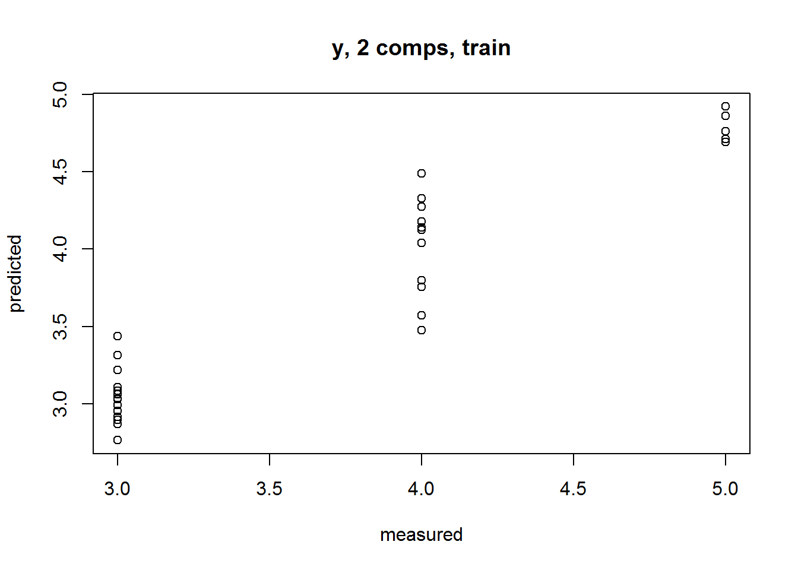
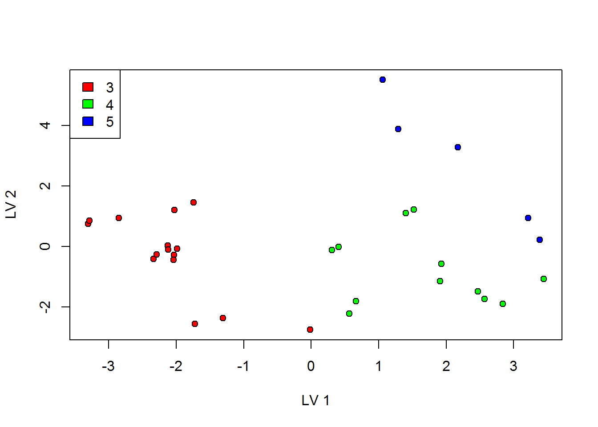

Capitulo 16 ```
16.0.1 SVM
Método de clasificación. Representamos cada dato como un punto en un espacio n-dimensional (dónde n es el nombre de atributos que tenemos) con el valor de cada atributo siendo el valor de una coordenada particular.
P.e.) si sólo tuvieramos dos características: Altura y Largo de Pelo de un individuo, representariamos estas 2 variables en un espacio de 2 dimensiones dónde cada punto tuviera 2 coordenadas (estas coordenadas se conocen como Support Vectors)
#library(e1071)
#x <- cbind(x_train,y_train)
#Modelamos
#fit <-svm(y_train ~ ., data = x)
#summary(fit)
#Predecir output
#predicted= predict(fit,x_test)16.0.2 Naïve Bayes
Técnica de Clasificación basada en el Teorema de Bayes que asume independencia entre los predictores. Un clasificador de Naive Bayes asume que la presencia de una característica particular en una clase no está relacionada con la presencia de cualquier otra característica.
p.e.) un fruto puede considerarse que sea una Manzana si es Roja, redonda, y de más de 3 cm de diametro. Aunque estas características dependieran entre ellas o de la existencia de otras características, el clasificador de naive Bayes considera que todas estas propiedades contribuyen cada una independientemente a la probabilidad de que esta fruta sea una manzana.
El modelo Naive Bayesiano es fácil de construir y particularmente útil para grandes datasets.
#library(e1071)
#x <- cbind(x_train,y_train)
#Modelamos
#fit <-naiveBayes(y_train ~ ., data = x)
#summary(fit)
#Predecimos Output
#predicted= predict(fit,x_test)16.0.3 Random Forest
Random Forest es un término usado para referirse a un conjunto de Arboles de Decisión (al que llamamos “Forest” o “Bosque”). Para clasificar un objeto en base a sus atributos, cada árbol da una clasificación y decimos que el árbol “vota” por esa clase. El bosque elije la clasificación con más votos (de todos lor árboles del bosque).
Cada árbol se planta y se hace crecer del siguiente modo: Si el número de casos en el set de entrenamiento es N, entonces una muestra de N casos se toma aleatoriamente pero con replacement (un caso puede ser seleccionado más de una vez en la muestra). Esta muestra será el set de entrenamiento par hacer crecer el árbol. Si hay M variables de entrada, un número m<
16.0.4 Análisis de Componentes Principales (PCA)
Cuando tenemos matrices de datos muy grandes, el PCA nos permite determinar el modelo mejor y más simple que represente esos datos mediante reducir el número de variables independientes. Ello se logra calculando valores y vectores de la matriz (y descartando las variables/características de menor variancia). A nivel práctico el PCA usa una proyección ortogonal de variables altamente correlacionadas de grupos de valores de variables linealmente no correlacionadas a los que llamamos Componentes Principales
Package FactormineR
#read data from external site after copied into the clipboard
#data <- read.csv("clipboard")
#ratings<-data[,3:14]
#runs finite mixture model
#library(mclust)
#fmm<-Mclust(ratings)
#fmm
#table(fmm$classification)
#fmm$parameters$mean
#compares with k-means solution
#kcl<-kmeans(ratings, 4, nstart=25)
#table(fmm$classification, kcl$cluster)
#creates biplots
#library(FactoMineR)
#pca<-PCA(ratings)
#plot(pca, choix=c("ind"), label="none", col.ind=fmm$classification) 16.0.5 Clasificación Jerárquica Ascendente (AHC)
Podemos usar AHC para clusterizar objetos en grupos con sentido. La combinación de PCA y AHC nos permite representar gráficamente proximidades o distancias entre variables formando clústeres. (El árbol de clasificación generado por AHC permite establecer líneas de corte a distintos niveles y así determinar clases más o menos significativas)
16.0.6 PLS
Partial least squares regression (PLS regression) es un método estadístico que tiene alguna relación con el PCA; Aquí en vez de encontrar hiperplanos de variancia mínima entre la respuesta y las variables independentes , se encuentra un modelo de regresión lineal mediante la proyección de las variables predecidas y las variables observables en un nuevo espacio.
Usar PLS para encontrar la mejor proyeccion que explique un factor (y)
library(pls)## Warning: package 'pls' was built under R version 3.2.5##
## Attaching package: 'pls'## The following object is masked from 'package:stats':
##
## loadings#Usamos el dataset de muestra de R mtcars
data(mtcars)
data<-mtcars
#Escalar y centrar los datos
scaled.data<-scale(data,center=T,scale=T)
#De objeto a modelo
fct<-as.factor(data$gear) #algun factor para usar para plotear grupos
y<-as.numeric(as.character(unlist(fct))) # convertir numerico y
paste(sum(is.na(scaled.data)), "datos faltantes")# nos aseguramos que no hay datos faltantes## [1] "0 datos faltantes"#Hacer PLS
pls.mod<-plsr(y~.,data=as.data.frame(scaled.data),ncomp=2) # this a pls model of y on all the data (scaled) and only 2 components
summary(pls.mod) # sumario## Data: X dimension: 32 11
## Y dimension: 32 1
## Fit method: kernelpls
## Number of components considered: 2
## TRAINING: % variance explained
## 1 comps 2 comps
## X 51.24 83.88
## y 71.53 89.41plot(pls.mod) # plotear predicciones
str(pls.mod) # resultados del modelado## List of 19
## $ coefficients : num [1:11, 1, 1:2] 0.0741 -0.076 -0.0857 -0.0194 0.1079 ...
## ..- attr(*, "dimnames")=List of 3
## .. ..$ : chr [1:11] "mpg" "cyl" "disp" "hp" ...
## .. ..$ : chr "y"
## .. ..$ : chr [1:2] "1 comps" "2 comps"
## $ scores : scores [1:32, 1:2] 1.52 1.41 1.91 -1.31 -2.03 ...
## ..- attr(*, "dimnames")=List of 2
## .. ..$ : chr [1:32] "Mazda RX4" "Mazda RX4 Wag" "Datsun 710" "Hornet 4 Drive" ...
## .. ..$ : chr [1:2] "Comp 1" "Comp 2"
## $ loadings : loadings [1:11, 1:2] 0.374 -0.368 -0.395 -0.244 0.401 ...
## ..- attr(*, "dimnames")=List of 2
## .. ..$ : chr [1:11] "mpg" "cyl" "disp" "hp" ...
## .. ..$ : chr [1:2] "Comp 1" "Comp 2"
## $ loading.weights: loadings [1:11, 1:2] 0.26 -0.266 -0.3 -0.068 0.378 ...
## ..- attr(*, "dimnames")=List of 2
## .. ..$ : chr [1:11] "mpg" "cyl" "disp" "hp" ...
## .. ..$ : chr [1:2] "Comp 1" "Comp 2"
## $ Yscores : scores [1:32, 1:2] 1.1 1.1 1.1 -2.41 -2.41 ...
## ..- attr(*, "dimnames")=List of 2
## .. ..$ : chr [1:32] "Mazda RX4" "Mazda RX4 Wag" "Datsun 710" "Hornet 4 Drive" ...
## .. ..$ : chr [1:2] "Comp 1" "Comp 2"
## $ Yloadings : loadings [1, 1:2] 0.285 0.169
## ..- attr(*, "dimnames")=List of 2
## .. ..$ : chr "y"
## .. ..$ : chr [1:2] "Comp 1" "Comp 2"
## $ projection : num [1:11, 1:2] 0.26 -0.266 -0.3 -0.068 0.378 ...
## ..- attr(*, "dimnames")=List of 2
## .. ..$ : chr [1:11] "mpg" "cyl" "disp" "hp" ...
## .. ..$ : chr [1:2] "Comp 1" "Comp 2"
## $ Xmeans : num [1:11] 7.11e-17 -1.47e-17 -9.09e-17 1.04e-17 -2.92e-16 ...
## $ Ymeans : num 3.69
## $ fitted.values : num [1:32, 1, 1:2] 4.12 4.09 4.23 3.31 3.11 ...
## ..- attr(*, "dimnames")=List of 3
## .. ..$ : chr [1:32] "Mazda RX4" "Mazda RX4 Wag" "Datsun 710" "Hornet 4 Drive" ...
## .. ..$ : chr "y"
## .. ..$ : chr [1:2] "1 comps" "2 comps"
## $ residuals : num [1:32, 1, 1:2] -0.1222 -0.0885 -0.2328 -0.3143 -0.1081 ...
## ..- attr(*, "dimnames")=List of 3
## .. ..$ : chr [1:32] "Mazda RX4" "Mazda RX4 Wag" "Datsun 710" "Hornet 4 Drive" ...
## .. ..$ : chr "y"
## .. ..$ : chr [1:2] "1 comps" "2 comps"
## $ Xvar : Named num [1:2] 175 111
## ..- attr(*, "names")= chr [1:2] "Comp 1" "Comp 2"
## $ Xtotvar : num 341
## $ fit.time : Named num 0
## ..- attr(*, "names")= chr "elapsed"
## $ ncomp : num 2
## $ method : chr "kernelpls"
## $ call : language plsr(formula = y ~ ., ncomp = 2, data = as.data.frame(scaled.data))
## $ terms :Classes 'terms', 'formula' length 3 y ~ mpg + cyl + disp + hp + drat + wt + qsec + vs + am + gear + carb
## .. ..- attr(*, "variables")= language list(y, mpg, cyl, disp, hp, drat, wt, qsec, vs, am, gear, carb)
## .. ..- attr(*, "factors")= int [1:12, 1:11] 0 1 0 0 0 0 0 0 0 0 ...
## .. .. ..- attr(*, "dimnames")=List of 2
## .. .. .. ..$ : chr [1:12] "y" "mpg" "cyl" "disp" ...
## .. .. .. ..$ : chr [1:11] "mpg" "cyl" "disp" "hp" ...
## .. ..- attr(*, "term.labels")= chr [1:11] "mpg" "cyl" "disp" "hp" ...
## .. ..- attr(*, "order")= int [1:11] 1 1 1 1 1 1 1 1 1 1 ...
## .. ..- attr(*, "intercept")= int 1
## .. ..- attr(*, "response")= int 1
## .. ..- attr(*, ".Environment")=<environment: R_GlobalEnv>
## .. ..- attr(*, "predvars")= language list(y, mpg, cyl, disp, hp, drat, wt, qsec, vs, am, gear, carb)
## .. ..- attr(*, "dataClasses")= Named chr [1:12] "numeric" "numeric" "numeric" "numeric" ...
## .. .. ..- attr(*, "names")= chr [1:12] "y" "mpg" "cyl" "disp" ...
## $ model :'data.frame': 32 obs. of 12 variables:
## ..$ y : num [1:32] 4 4 4 3 3 3 3 4 4 4 ...
## ..$ mpg : num [1:32] 0.151 0.151 0.45 0.217 -0.231 ...
## ..$ cyl : num [1:32] -0.105 -0.105 -1.225 -0.105 1.015 ...
## ..$ disp: num [1:32] -0.571 -0.571 -0.99 0.22 1.043 ...
## ..$ hp : num [1:32] -0.535 -0.535 -0.783 -0.535 0.413 ...
## ..$ drat: num [1:32] 0.568 0.568 0.474 -0.966 -0.835 ...
## ..$ wt : num [1:32] -0.6104 -0.3498 -0.917 -0.0023 0.2277 ...
## ..$ qsec: num [1:32] -0.777 -0.464 0.426 0.89 -0.464 ...
## ..$ vs : num [1:32] -0.868 -0.868 1.116 1.116 -0.868 ...
## ..$ am : num [1:32] 1.19 1.19 1.19 -0.814 -0.814 ...
## ..$ gear: num [1:32] 0.424 0.424 0.424 -0.932 -0.932 ...
## ..$ carb: num [1:32] 0.735 0.735 -1.122 -1.122 -0.503 ...
## ..- attr(*, "terms")=Classes 'terms', 'formula' length 3 y ~ mpg + cyl + disp + hp + drat + wt + qsec + vs + am + gear + carb
## .. .. ..- attr(*, "variables")= language list(y, mpg, cyl, disp, hp, drat, wt, qsec, vs, am, gear, carb)
## .. .. ..- attr(*, "factors")= int [1:12, 1:11] 0 1 0 0 0 0 0 0 0 0 ...
## .. .. .. ..- attr(*, "dimnames")=List of 2
## .. .. .. .. ..$ : chr [1:12] "y" "mpg" "cyl" "disp" ...
## .. .. .. .. ..$ : chr [1:11] "mpg" "cyl" "disp" "hp" ...
## .. .. ..- attr(*, "term.labels")= chr [1:11] "mpg" "cyl" "disp" "hp" ...
## .. .. ..- attr(*, "order")= int [1:11] 1 1 1 1 1 1 1 1 1 1 ...
## .. .. ..- attr(*, "intercept")= int 1
## .. .. ..- attr(*, "response")= int 1
## .. .. ..- attr(*, ".Environment")=<environment: R_GlobalEnv>
## .. .. ..- attr(*, "predvars")= language list(y, mpg, cyl, disp, hp, drat, wt, qsec, vs, am, gear, carb)
## .. .. ..- attr(*, "dataClasses")= Named chr [1:12] "numeric" "numeric" "numeric" "numeric" ...
## .. .. .. ..- attr(*, "names")= chr [1:12] "y" "mpg" "cyl" "disp" ...
## - attr(*, "class")= chr "mvr"#ploteamos Scores
obj<-pls.mod$scores
plot(obj[,1],obj[,2],pch=21,bg=rainbow(nlevels(fct))[fct], xlab="LV 1",ylab="LV 2")
legend("topleft",levels(fct),fill=rainbow(nlevels(fct))) # añadimos legenda
16.1 Aprendizaje Reforzado
La máquina se expone a un entorno dónde puede autoentrenarse continuamente mediante prueba y error. Aprende de la experiencia pasada y intenta capturar el mejor conocimiento para tomar decisiones precisas. p.e.) Markov Decision Process
16.1.1 Procesos de Decisión de Markov
Los Procesos estocástico con la propiedad de Markov son los que la distribución de la probabilidad del valor futuro de una variable aleatoria depende únicamente de su valor presente, siendo independiente de la historia de dicha variable.
#cargar el paquete MDPtoolbox
library(MDPtoolbox)## Warning: package 'MDPtoolbox' was built under R version 3.2.5## Loading required package: Matrix## Loading required package: linprog## Warning: package 'linprog' was built under R version 3.2.5## Loading required package: lpSolve## Warning: package 'lpSolve' was built under R version 3.2.3#crear una matriz de transición (T) para 2 estados y 2 acciones
T <- array(0, c(2, 2, 2))
T[,,1] <- matrix(c(0, 1, 0.8, 0.2), nrow=2, ncol=2, byrow=TRUE)
T[,,2] <- matrix(c(0.5, 0.5, 0.1, 0.9), nrow=2, ncol=2, byrow=TRUE)
#Dimensions are #states por #states por #actions
#crear matriz de recompensa (R) de dimensiones #states por #actions
R <- matrix(c(10, 10, 1, -5), nrow=2, ncol=2, byrow=TRUE)
#comprobar si para las T y R represent un Porceso de Decision de MArkov bien definido MDP
mdp_check(T, R)## [1] ""## [1] "" Es correcto (si el MDP es válido retorna un empty string).
16.1.2 Redes Neuronales y Deep Learning
Técnica para construir programas de ordenador que aprenden de datos. Se basa en cómo creemos que funciona nuestro cerebro. Primero, se crea una colección de “neuronas” de software conectadas juntas, de modo a que puedan mandarse mensajes las unas a las otras. Luego,se insta a la red a resolver un problema, que intenta resolver una y otra vez, cada vez estrechando aquellas conexiones que llevan a acertar y disminuyendo aquéllas que llevan a fallar. p.e.) aplicaciones en visión artificial y en coches autónomos, entre muchas otras